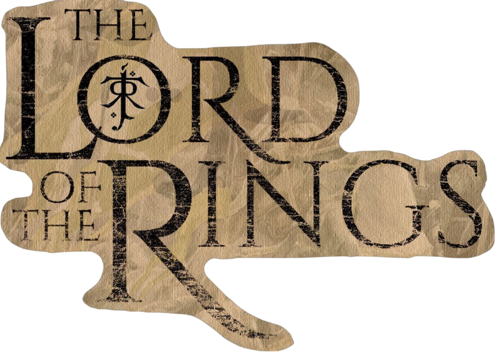
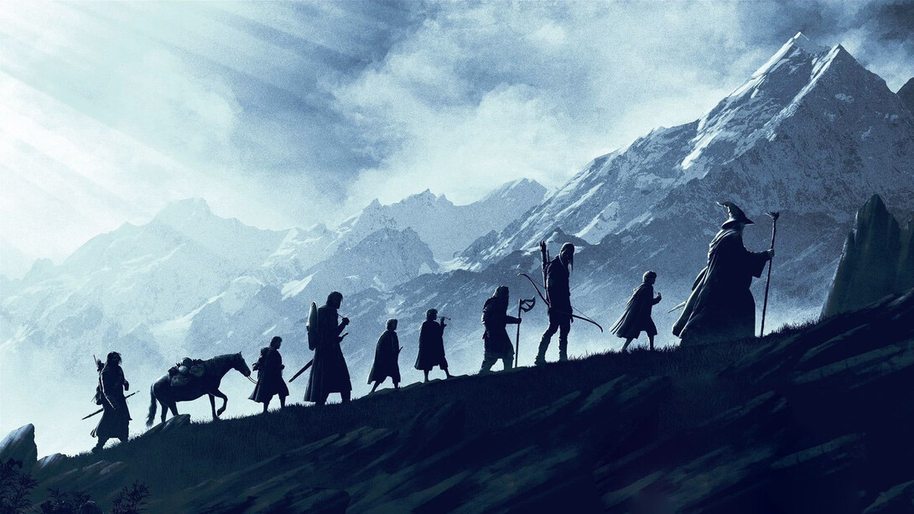
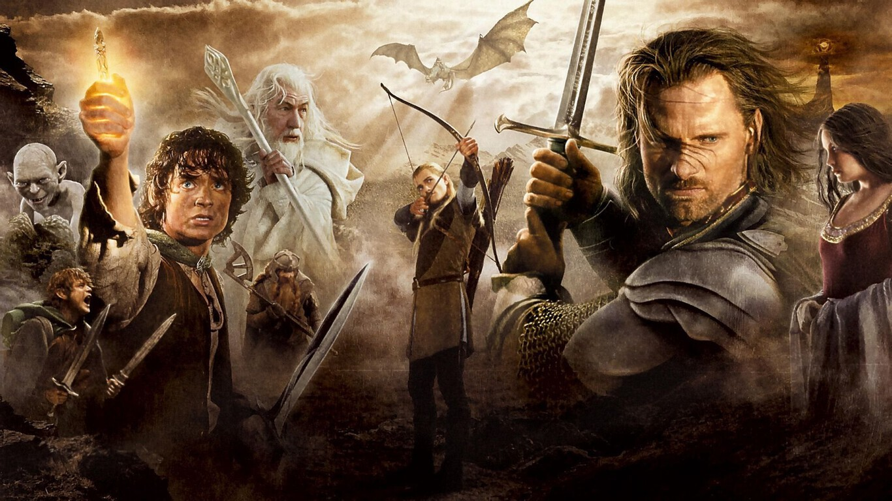
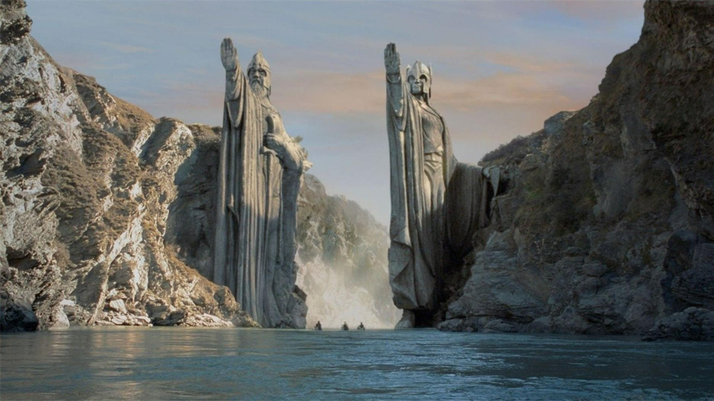
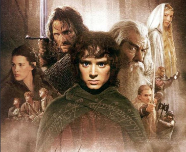
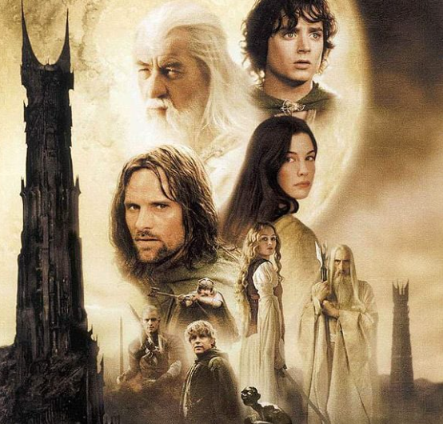
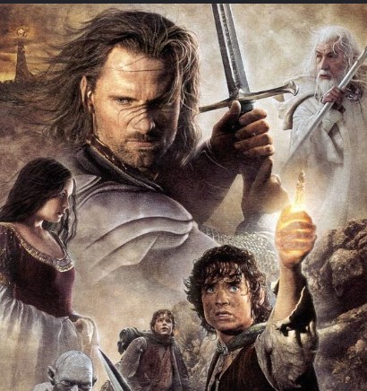

La trilogía de El Señor de los Anillos narra la épica travesía del hobbit Frodo Bolsón para destruir el Anillo Único y derrotar al Señor Oscuro Sauron en las tierras de la Tierra Media. Acompañado por la Comunidad del Anillo, Frodo debe soportar el peso corruptor del poder hasta los fuegos del Monte del Destino para salvar al mundo de la oscuro.
El escritor de la novela original en la que se basa la historia es J.R.R. Tolkien, quien publicó la obra literaria en 1955. Por su parte, el director de la trilogía cinematográfica es el neozelandés Peter Jackson. La cual se grabó entre los años 1999 hasta 2000.
Las películas se pueden ver en la plataforma de Netflix, Disney+, HBO y Flow.
La Comunidad del Anillo, el joven hobbit Frodo Bolsón hereda un Anillo Único capaz de destruir la Tierra Media. Para evitarlo, se une a ocho aliados y emprende un peligroso viaje hacia el Monte del Destino, perseguido por los oscuros siervos de Sauron.


Las Dos Torres, luego de la separación de la Comunidad, Frodo y Sam continúan su marcha hacia Mordor guiados por Gollum. Mientras tanto, Aragorn, Legolas y Gimli luchan por liberar a Rohan de la corrupción de Saruman, culminando en la épica batalla del Abismo de Helm contra el ejército del Señor Oscuro.
El Retorno del Rey, mientras Frodo y Sam enfrentan la traición de Gollum para alcanzar el Monte del Destino, Aragorn asume su trono y lidera a las fuerzas de la Tierra Media en la batalla final ante los portones de Mordor, buscando distraer a Sauron para permitir la destrucción definitiva del Anillo.
